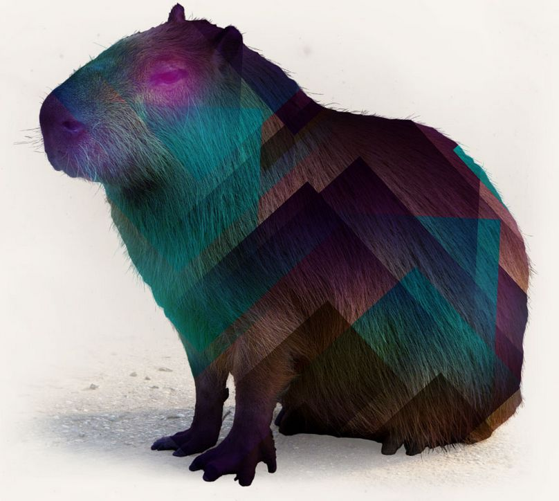
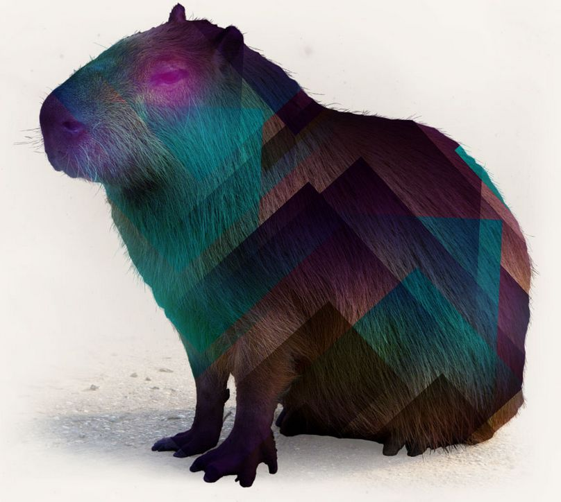

Software Development Best Practices
for Ruby Stack
Created by Dmytro Panov
Agenda
Part 1
- Coding Standards
- Source Code Management
- Code Review
- Automatic Code Inspection
- Technical Debt Management
- Testing
Part 2
- CI & Automated Builds
- CI & Automated Deployment
- Development Environment Standard
- Availability & Reliability
- Performance Testing
Part 3
- User Experience
- Security Management
- 3rd Party Software Reuse
- Requirenments Management
- Estimation Practices
- Team Collaboration
Dmytro Panov
- 10 - IT, Ruby\RoR - 8, JavaScript - 6, Java - 3
- JRuby & Enterprise Applications
- Education, eDiscovery and RPM
- Oracle, PostgreSQL and MySQL (SQL and Optimisation)
- More 100s tech interview over the world
- Prepare several Traning & Presentations
- Being an Expert in 5 trainee groups (3 months)
Dmytro Panov
- Interesting in Software Architecture, Big Data and IoT
- I like Hiking & Traveling
Software Development Best Practices
- Recommendations
- Experience
- Time Actuality
- Value & Results
- Internal Community
Coding Standards
Coding Standards
- Policy is documented and accessible in the project for whole team.
- Project structure and architecture follows industry paradigm.
The Ruby Style Guide - github.com/bbatsov/ruby-style-guide
The Rails Style Guide - github.com/bbatsov/rails-style-guide
JavaScript(CoffeScript), CSS(SCSS/LESS), ...
Source Code Management
Source Code Management
- Code before master is verified and inspected
- Descriptive messages and work item for each commit
- Database schema, dictionaries and scripts are in.
- Binaries and user settings are out
- Consistent and documented branching strategy (Git Flow)
Git Flow
Code Review
- Over-the-shoulder
- Email pass-around
- Pair programming
- Tool-assisted
- Formal inspections
Code Review
- Procedure is defined and documented
- Checklist is used
- Part of review is automated (specialized review tools are used)
- Review workflow is using best practices for selected tool
- All changes should be reviewed and validated
- Process ensures review defects or/and action items are fixed
Code Review Tools

- GitHub Code Review (Pull Requests)
- Crucible (Atlassian)
- Review Board
- Gerrit
- Collaborator
Automatic Code Inspection
Automatic Code Inspection
- Procedure is defined and communicated to team
- Code conventions are checked by automatic code inspection
- Tools are automatically run on a regular intervals or certain events (commit, build, at specific time) during all development process
- Ensure code inspections acording to ruby-style-guide and rails-style-guide
- Could be configured with additional rules
- Config file .rubocop-settings.yml

- Open source CI written on Rails with codebase on GitHub
- Run rubocop against pull request diff
- Easy to install and configure
Automatic Code Inspection
- Code quality metrics are defined and documented
- Code duplication detection tools are used
- Goals based on code metrics are explicitly linked to project goals
- Code quality related metrics are regulary collected and reviewed
- Metrics gathering is automated
- The code inspection issues are tracked and fixed regularly (tech debt)
Automatic Code Inspection Tools
- Metric_fu(cane, churn, Flog, Flay, Reek, Roodi, Saikuro, Code Statistic, Rails Best Practices)
- rubycritic
- debride - uncalled methods
- pronto
Technical Debt Management
Technical Debt Management
- Tracked regularly and is transparent for stakeholders (Team, PM, Product Owner, Client)
- Team prevents TD from growing
- Technical Debt list is reviewed after/before each sprint
Technical Debt Management
- TD growing automatially (as systems evolves, versions)
Technical Debt Management
- The cost of TD is included in estimation
- Cleanup-releases when TD overcomes threshold
- Refactoring of code is conducted on a regular base as part of TD items
- Refactoring is accompanied by tests (unit, integration, etc.)
Testing
Test Types
- Unit Testing
- Integration Testing
- User Aceptance Testing
- Functional Testing
- Non-Functional Testing
Unit Testing
- The testing policy is defined and documented
- Tests are F.I.R.S.T. (Fast, Isolated, Repeatable, Self-Verifying, Timely)
- Test code is separated from production code
- Defects detected should be fixed before moving to the next stage
- Code coverage by test is tracked regularly
- Code coverage by test target is above agreed threehold, by default 90%
- TDD, BDD
- Specification, Rump-up material
Testing Tools
 

- RSpec
- Capybara
- Cucumber
- Poltergaist
- PhantomJS
Test Coverage: simplecov
Test Utilities: factory_girl, should-matchers, database_cleaner, vcr, webmock, ...
Env Preloaders: spork/spring/zeus/theine
paralel_tests
Non-Functional Testing
- Reliability testing
- Usability testing
- Efficiency testing
- Maintainability testing
- Portability testing
- Baseline testing
- Compliance testing
- Documentation testing
- Endurance testing
- Load testing
- Performance testing
- Compatibility testing
- Security testing
- Scalability testing
- Volume testing
- Stress testing
- Recovery testing
- Internationalization and Localization testing
Questions...
.svg.png)